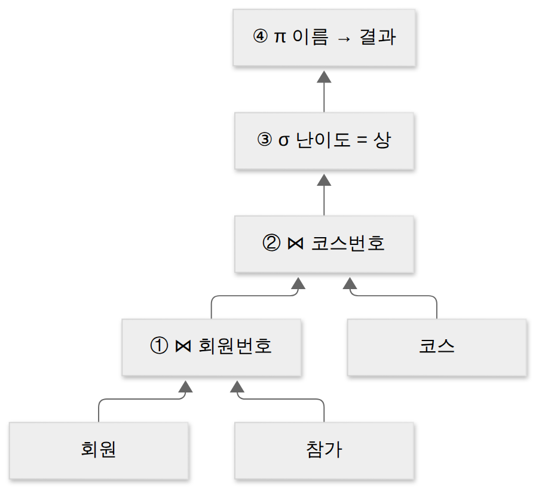

D044 · 등산 동호회 ‘바람재’ 출석부로 푸는 관계대수 — 자르고(σ·π) 붙이고(⋈) 나누는(÷) 순서 있는 질의
B3 어제 D043에서 릴레이션의 생김새와 키를 봤다면, 오늘은 그 릴레이션을 가공하는 연산, 관계대수예요. 관계대수 · 관계해석 문제는 최근 20회 시험 중 19회 나왔고, 그중에서도 “관계대수는 절차적이다”라는 한 줄이 18회에 걸려 있어요. 오늘 예시는 동네 등산 동호회 ‘바람재’의 출석부예요. 총무에게 날아오는 질문을 “어떤 순서로 표를 만지면 답이 나오나”로 바꿔 적는 것, 그게 오늘 하는 일 전부예요.
- 관계대수가 연산 순서를 적는 절차적 언어이고, 관계해석(비절차적)과 표현력이 같다는 점을 설명하고 “관계대수는 비절차적”이라는 오답 선지를 걸러낼 수 있다
- 일반 집합 연산(합 · 교 · 차 · 카티션 곱)과 순수 관계 연산(σ · π · ⋈ · ÷)을 구별하고, 순수 관계 연산자가 아닌 것을 고를 수 있다
- 작은 릴레이션에서 σ(수평) · π(수직, 중복 제거) · ⋈(공통 속성) · ÷(결과 속성 R − S)의 결과 표를 손으로 구할 수 있다
- 카티션 곱 결과의 차수(합) · 카디널리티(곱)를 계산하고, 합 · 교 · 차의 합병 가능 조건을 말할 수 있다
- 관계대수식 π(σ(R))을 SELECT … FROM … WHERE로, 반대로 SQL을 관계대수식으로 옮길 수 있다
1부 (약 19분)
2부 (약 21분)
0. 총무에게 날아오는 질문들
바람재 총무의 단톡방에는 이런 질문이 쌓여요. “서울 사는 회원이 누구예요?”(조건에 맞는 사람 고르기) “이름만 보내 주세요.”(필요한 칸만 남기기) “한라산 다녀온 사람 이름은요?”(회원 표와 참가 기록 붙이기) “상급 코스를 전부 다녀온 사람한테 배지를 준대요.”(조건을 빠짐없이 만족하는 사람 찾기). 엑셀이라면 필터 걸고, 열 숨기고, VLOOKUP으로 붙이고, 손으로 세는 과정을 총무가 매번 기억해야 해요. 관계대수는 그 손동작 순서를 식으로 적어 둔 레시피예요.
등장하는 표는 다섯 개예요. 회원(회원번호, 이름, 지역, 나이) 5행, 코스(코스번호, 코스명, 난이도) 4행, 회원이 어느 코스를 다녀왔는지 적은 참가(회원번호, 코스번호) 12행, 그리고 달별 출석 명단 오월 · 유월(회원번호, 이름) 각 3행이에요. 용어는 어제 그대로예요 — 표 = 릴레이션, 행 = 튜플, 열 = 속성, 열의 수 = 차수, 행의 수 = 카디널리티(D043).
D033 · D035에서 SELECT · WHERE · JOIN을 SQL 문법으로 먼저 봤어요. 오늘은 같은 일을 기호로 적는 이론 쪽이에요. SQL 문법 설명은 반복하지 않고, 기호 하나가 무엇을 하는지, 결과 표가 어떻게 생기는지를 손으로 따라가는 데 집중해요.
1. 장면 1 — 관계대수란: 표에서 표를 만드는 순서 있는 언어 기출 18회
관계대수의 정의 — 왜 만들었나
정의: 관계대수(relational algebra)는 관계 데이터 모델에서 원하는 정보를 어떤 연산을 어떤 순서로 적용해서 얻는지를 기술하는 연산 체계이자 형식 언어예요. 1970년 E. F. Codd가 관계 모델을 제안하면서 함께 내놓았어요. 표를 다루는 질의를 수학처럼 정확하게 적을 방법이 필요했거든요. “서울 사람 이름” 같은 질문을 말로만 하면 사람마다 해석이 갈리지만, 연산 기호로 적으면 결과 표가 하나로 정해져요.
지금 우리가 쓰는 SQL도 이 이론 위에 서 있어요. DBMS의 질의 처리기는 SQL을 받으면 내부적으로 관계대수 연산의 트리로 바꾸고, 그 트리의 순서를 바꿔 가며 가장 빠른 실행 계획을 찾아요(질의 최적화). 그래서 관계대수는 “시험용 옛날 기호”가 아니라 DBMS가 머릿속으로 쓰는 언어에 가까워요.
닫힘성 — 입력도 릴레이션, 결과도 릴레이션
관계대수의 모든 연산은 피연산자가 릴레이션이고, 결과도 다시 릴레이션이에요. 이 성질을 닫힘(closure)이라고 불러요. 정수끼리 더하면 다시 정수가 나와서 계속 더할 수 있는 것처럼, 연산 결과가 표니까 그 표에 또 연산을 걸 수 있어요. π이름(σ지역='서울'(회원))처럼 괄호를 겹겹이 쓰는 식이 가능한 이유가 이거예요. 시험의 옳은 선지 “피연산자와 연산 결과가 모두 릴레이션이다”가 바로 이 닫힘성이에요.
절차적 언어 — “어떻게”를 적는다
절차적(procedural)이라는 말은 결과를 얻는 과정(순서)을 사용자가 직접 적는다는 뜻이에요. 관계대수식 π이름(σ지역='서울'(회원))은 “먼저 회원에서 서울인 행을 고르고, 그다음 이름 열만 남겨라”라는 작업 지시서예요. 반대로 관계해석(relational calculus)은 “지역이 서울인 회원 t의 이름”처럼 원하는 결과가 만족할 조건만 적고 과정은 적지 않는 비절차적 언어예요. 레시피는 “파를 썰고, 반죽에 넣고, 부쳐라”고 순서를 쓰고, 주문서는 “해물파전 하나”라고만 써요. 관계대수가 레시피, 관계해석이 주문서예요.
둘 중 어느 쪽이 더 많은 질의를 표현할 수 있느냐 하면, 같아요. Codd는 관계대수로 쓸 수 있는 질의는 관계해석으로도 쓸 수 있고 그 반대도 된다는 것을 보였어요(표현력 동등). 그래서 “관계대수로 표현한 식은 관계해석으로 바꿀 수 있다”는 옳은 선지예요. 차이는 표현력이 아니라 적는 방식(순서를 쓰나, 조건을 쓰나)이에요. 또 하나 — “프레디킷(술어) 해석에 기반한다”는 문구는 관계해석의 설명이에요. 관계대수 설명에 이 말이 붙어 나오면 틀린 선지로 보세요. 관계해석은 내일 D045에서 자세히 봐요.
연산자는 두 부류 — 일반 집합 4 · 순수 관계 4
관계대수의 연산자는 출신에 따라 둘로 나뉘어요. 하나는 수학의 집합 연산을 릴레이션에 그대로 가져온 일반 집합 연산자(합집합 ∪ · 교집합 ∩ · 차집합 − · 카티션 곱 ×), 다른 하나는 관계 모델의 표 구조(행 · 열 · 공통 속성)를 다루려고 새로 만든 순수 관계 연산자(셀렉트 σ · 프로젝트 π · 조인 ⋈ · 디비전 ÷)예요. 장면 2에서 앞의 넷, 장면 3~5에서 뒤의 넷을 하나씩 보고, 장면 6에서 분류만 따로 정리해요.
2. 장면 2 — 집합에서 빌려 온 네 연산: 합 · 교 · 차 · 카티션 곱
합병 가능 — 일반 집합 연산의 전제 조건
정의: 두 릴레이션이 합병 가능(union-compatible)하다는 건 차수(속성 수)가 같고, 서로 대응하는 속성의 도메인이 같다는 뜻이에요. 합 · 교 · 차는 두 표의 튜플을 서로 비교하거나 위아래로 이어 붙이는 연산이라, 열의 개수와 종류가 맞지 않으면 “같은 튜플인가?”를 판정할 수가 없어요. 오월 · 유월 명단은 둘 다 (회원번호 정수, 이름 문자열)이라 합병 가능해요. 반면 오월(회원번호, 이름) 아래에 코스(코스번호) 표를 붙이려 하면 열 수부터 안 맞아요 — 총무가 “이건 줄을 맞출 수가 없어요” 하고 호루라기를 부는 상황이에요.
SQL에서도 같은 규칙이 UNION · INTERSECT · EXCEPT에 걸려 있어요. 다만 SQL은 열 이름이 아니라 열의 개수와 위치별 자료형으로 맞춰요. 첫 번째 SELECT의 첫 열과 두 번째 SELECT의 첫 열이 짝이 되는 식이에요.
합집합 ∪ · 교집합 ∩ · 차집합 −
합집합 R ∪ S는 R이나 S 중 한쪽에라도 있는 튜플을 모두 모은 릴레이션이에요. 릴레이션은 같은 튜플을 두 번 갖지 않으니, 양쪽에 다 있는 튜플은 한 번만 남아요. 교집합 R ∩ S는 양쪽 모두에 있는 튜플만 남겨요. 차집합 R − S는 R에는 있지만 S에는 없는 튜플이에요. 합 · 교는 순서를 바꿔도 결과가 같지만(교환법칙 성립), 차집합은 R − S와 S − R이 서로 다른 질문이에요. “오월 − 유월”은 유월에 빠진 사람, “유월 − 오월”은 유월에 새로 온 사람이에요. 빼는 순서를 바꾸면 총무가 묻는 내용이 달라져요.
| 회원번호 | 이름 |
|---|---|
| 1 | 가온 |
| 2 | 나래 |
| 3 | 다솜 |
| 회원번호 | 이름 |
|---|---|
| 3 | 다솜 |
| 4 | 라온 |
| 5 | 마루 |
오월 · 유월 산행 출석 명단이에요. 두 표 모두 (회원번호 정수, 이름 문자열) — 열 수가 같고 대응하는 열의 도메인이 같아요. 이걸 합병 가능하다고 해요.
| 회원번호 | 이름 |
|---|---|
| 1 | 가온 |
| 2 | 나래 |
| 3 | 다솜 |
| 3 | 다솜 |
| 4 | 라온 |
| 5 | 마루 |
합집합 ∪: 한쪽에라도 있는 튜플을 모아요. 위아래로 이어 붙이면 다솜이 두 번 나오지만, 릴레이션은 같은 튜플을 두 번 갖지 않으니 하나는 지워져요. 결과 5행.
| 회원번호 | 이름 |
|---|---|
| 3 | 다솜 |
교집합 ∩: 양쪽 모두에 있는 튜플만. 다솜 1행이에요. 두 달 연속 개근한 사람이죠.
| 회원번호 | 이름 |
|---|---|
| 1 | 가온 |
| 2 | 나래 |
차집합 오월 − 유월: 오월엔 있는데 유월엔 없는 튜플. 가온 · 나래, “유월에 빠진 사람” 명단이에요.
| 회원번호 | 이름 |
|---|---|
| 4 | 라온 |
| 5 | 마루 |
차집합 유월 − 오월: 이번엔 “유월에 처음 온 사람” 라온 · 마루예요. 합집합 · 교집합은 순서를 바꿔도 같지만 차집합은 순서가 바뀌면 질문 자체가 바뀌어요.
첫 상자는 5행, 둘째(UNION ALL)는 다솜이 두 번 나와 6행이에요. 관계대수의 합집합은 집합이라 중복이 없고, SQL은 ALL을 붙이면 중복을 그대로 남겨요. 셋째는 다솜 1행, 넷째는 가온 · 나래, 다섯째는 라온 · 마루. 마지막 상자는 오류예요 — 열 수가 달라 합병 가능하지 않으니까요. Oracle에서는 EXCEPT 대신 MINUS라는 이름을 써요.
카티션 곱 × — 모든 짝 만들기
정의: 카티션 곱(Cartesian product, 교차곱) R × S는 R의 튜플 하나하나에 S의 튜플을 전부 하나씩 이어 붙여 만든 릴레이션이에요. 수식으로는 R × S = { r · s | r ∈ R ∧ s ∈ S } — R에서 하나, S에서 하나를 뽑는 모든 경우예요. 회원 5명과 코스 4개의 카티션 곱은 “누가 어느 코스를 갈 수 있는가”의 모든 경우 20가지예요. 실제로 다녀온 기록(참가)과는 전혀 달라요. 달력에 “가능한 모든 일정”을 다 적은 것과 실제 출석부의 차이라고 생각하면 돼요.
결과 표의 크기는 계산으로 바로 나와요. 튜플은 모든 짝이니 카디널리티 = 두 카디널리티의 곱(5 × 4 = 20), 각 튜플은 R의 열 뒤에 S의 열을 이어 붙이니 차수 = 두 차수의 합(4 + 3 = 7). 합 · 교 · 차와 달리 카티션 곱은 합병 가능할 필요가 없어요. 열을 옆으로 붙이는 연산이라 열 구성이 달라도 상관없거든요. 카티션 곱은 혼자서는 쓸모가 적어 보이지만, 장면 4에서 보듯 조인의 재료가 돼요. SQL로는 CROSS JOIN, 또는 FROM 절에 표를 쉼표로 나열하고 조건을 안 거는 형태예요(D035).
20행 · 7열이 나와요. 한 가지 덧붙이면, 이론 책에서는 두 릴레이션에 같은 이름의 속성이 있으면 카티션 곱 전에 이름을 바꾸라고 하지만, SQL은 같은 이름의 열이 있어도 CROSS JOIN이 되고 표 이름(회원.회원번호)이나 별칭으로 구별해요. 시험에서는 이름 충돌보다 차수 · 카디널리티 계산을 물어요.
3. 장면 3 — 자르고 고르기: 셀렉트 σ와 프로젝트 π
셀렉트 σ — 조건에 맞는 튜플만 (수평 부분집합)
정의: 셀렉트 σ조건(R)은 릴레이션 R에서 조건을 만족하는 튜플만 골라 만든 릴레이션이에요. 표를 가로로 자르기 때문에 수평적 부분집합이라고 불러요. 기호 σ는 그리스 문자 시그마(selection의 s)예요. 결과의 차수는 원래와 같고(열은 그대로), 카디널리티만 줄거나 같아요. 조건에는 비교 연산자(=, ≠, <, ≤, >, ≥)를 쓰고, 여러 조건은 ∧(그리고) · ∨(또는) · ¬(아니다)으로 묶어요. 예를 들어 σ지역='서울' ∧ 나이≥34(회원)은 서울에 살면서 34세 이상인 회원이에요.
이름이 SQL의 SELECT와 같아서 헷갈리기 쉬운데, 관계대수의 셀렉트는 SQL의 WHERE에 해당해요. SQL의 SELECT 절(열 목록)은 오히려 다음에 볼 프로젝트 쪽이에요. 출제자가 노리는 함정이 정확히 이 이름 겹침이에요.
프로젝트 π — 지정한 속성만, 중복은 제거 (수직 부분집합)
정의: 프로젝트 π속성 목록(R)은 릴레이션 R에서 지정한 속성(열)만 남긴 릴레이션이에요. 표를 세로로 자르니 수직적 부분집합이에요. 기호 π는 파이(projection의 p)예요. 열을 지우고 나면 서로 다르던 튜플이 같아질 수 있는데, 결과도 릴레이션이라 같은 튜플을 두 번 가질 수 없어요. 그래서 프로젝트는 중복되는 튜플을 제거해요. 회원 5명의 지역만 뽑으면 서울 · 부산 · 서울 · 대전 · 서울이 아니라 서울 · 부산 · 대전 3행이 돼요. 기출 11회
SQL로 옮길 때 이 지점이 달라요. SQL의 SELECT는 기본적으로 중복을 남기는 “멀티셋”이라, 관계대수의 π와 똑같이 만들려면 DISTINCT를 붙여야 해요(D033). 아래 두 상자를 비교해 보세요.
둘을 겹쳐 쓰기 — 안쪽부터 읽는다
실제 질문은 대개 σ와 π를 같이 써요. π이름(σ나이≥34(회원))은 안쪽 괄호부터 — 먼저 34세 이상인 행을 고르고(나래 · 다솜 · 마루), 그다음 이름 열만 남겨요. 순서가 중요한 경우도 있어요. 조건에 쓰는 열을 프로젝트로 먼저 지워 버리면 그다음 셀렉트를 걸 수 없거든요. 아래 애니메이션 넷째 단계가 그 장면이에요. 그리고 조건 두 개를 ∧로 묶은 셀렉트 하나는 셀렉트를 두 번 겹친 것과 같아요: σA ∧ B(R) = σA(σB(R)).
| 회원번호 | 이름 | 지역 | 나이 |
|---|---|---|---|
| 1 | 가온 | 서울 | 29 |
| 2 | 나래 | 부산 | 34 |
| 3 | 다솜 | 서울 | 41 |
| 4 | 라온 | 대전 | 27 |
| 5 | 마루 | 서울 | 34 |
총무의 질문은 “서울 사는 회원의 이름”이에요. 회원 릴레이션 5행 · 4열에서 출발해요. 이 질문에는 두 가지 일이 섞여 있어요. 서울인 행을 고르는 일, 이름 열만 남기는 일.
| 회원번호 | 이름 | 지역 | 나이 |
|---|---|---|---|
| 1 | 가온 | 서울 | 29 |
| 2 | 나래 | 부산 | 34 |
| 3 | 다솜 | 서울 | 41 |
| 4 | 라온 | 대전 | 27 |
| 5 | 마루 | 서울 | 34 |
① σ지역='서울'(회원): 조건을 하나씩 대 보고 맞는 튜플만 남겨요. 1 · 3 · 5가 남고 2 · 4는 빠져요. 열은 네 개 그대로예요 — 셀렉트는 행만 건드려요.
| 이름 |
|---|
| 가온 |
| 다솜 |
| 마루 |
② π이름( ① 의 결과 ): 남은 3행에서 이름 열만 남겨요. 식으로 쓰면 π이름(σ지역='서울'(회원)). 괄호 안쪽이 먼저 계산돼요.
| 이름 |
|---|
| 가온 |
| 나래 |
| 다솜 |
| 라온 |
| 마루 |
✗ 지역 열이 이미 사라져서 σ 지역='서울'을 걸 수 없음
순서를 거꾸로 하면? π이름을 먼저 하면 지역 열이 없어져서, 그다음 σ지역='서울'을 걸 수 없어요. 관계대수가 “순서를 적는 언어”라는 게 이런 뜻이에요. 순서가 곧 의미예요.
| 관계대수 | SQL |
|---|---|
| π 이름 | SELECT 이름 |
| (회원) | FROM 회원 |
| σ 지역='서울' | WHERE 지역 = '서울' |
SQL로 옮기면 SELECT 이름 FROM 회원 WHERE 지역 = '서울'. 쓰는 순서는 다르지만 할 일은 같아요. 다만 SQL은 실행 순서를 DBMS에 맡기는 선언형 언어라는 점이 달라요(장면 7).
4. 장면 4 — 붙이기: 조인 ⋈
조인의 정의 — 카티션 곱 + 셀렉트
정의: 조인 R ⋈조건 S는 두 릴레이션에서 조건(보통 공통 속성의 값이 같음)을 만족하는 튜플끼리 이어 붙여 하나의 릴레이션을 만드는 연산이에요. 기호 ⋈는 나비넥타이 모양이에요. “한라산 다녀온 사람의 이름”처럼 이름은 회원에, 다녀온 기록은 참가에 있을 때 둘을 회원번호로 붙여야 답이 나와요. 이때 공통 속성(회원번호)은 대개 한쪽의 외래키예요 — 어제 본 참가.회원번호 → 회원.회원번호 관계가 조인의 길이 돼요(D043).
조인은 새로운 연산처럼 보이지만, 정의를 풀면 앞에서 본 두 연산의 조합이에요. 먼저 카티션 곱으로 모든 짝을 만들고(회원 5 × 참가 12 = 60행), 그 위에 셀렉트로 회원번호가 같은 짝만 남기면(12행) 조인이에요: R ⋈조건 S = σ조건(R × S). 카티션 곱이 “모든 소개팅 조합”이라면 조인은 “실제로 서로 아는 사이만 남기는 필터”예요. 실제 DBMS는 60행을 만들지 않고 해시 · 정렬 병합 같은 방법으로 바로 찾지만, 결과는 정의와 같아요.
| 표 | 행 | 열 |
|---|---|---|
| 회원 | 5 | 4 |
| 참가 | 12 | 2 |
“회원별로 다녀온 코스를 이름과 함께” 보려면 회원과 참가를 붙여야 해요. 정의대로 두 단계로 풀어 볼게요.
| 회원.번호 | 이름 | 참가.번호 | 코스 |
|---|---|---|---|
| 1 | 가온 | 1 | C1 |
| 1 | 가온 | 2 | C1 |
| 1 | 가온 | 3 | C1 |
| … | … | … | … |
| 5 | 마루 | 5 | C3 |
① 카티션 곱 회원 × 참가: 회원 한 명마다 참가 12행을 전부 붙여요. 5 × 12 = 60행, 열은 4 + 2 = 6개. 대부분은 “가온 옆에 나래의 참가 기록” 같은 엉뚱한 짝이에요.
| 회원.번호 | 이름 | 참가.번호 | 코스 |
|---|---|---|---|
| 1 | 가온 | 1 | C1 |
| 1 | 가온 | 2 | C1 |
| 1 | 가온 | 3 | C1 |
| … | … | … | … |
| 5 | 마루 | 5 | C3 |
② σ회원.회원번호 = 참가.회원번호: 두 번호가 같은 짝만 남겨요. 엉뚱한 짝 48행이 빠져요.
| 회원번호 | 이름 | 코스번호 |
|---|---|---|
| 1 | 가온 | C1 |
| 1 | 가온 | C2 |
| … | … | … |
| 5 | 마루 | C3 |
남은 12행이 조인 결과예요(참가 행 하나당 회원 하나가 붙으니 참가 수와 같아요). 같은 값이 든 회원번호 열을 하나로 합쳐 보여 주면 자연 조인이에요.
조인의 종류 — 세타 · 동등 · 자연
조건 모양에 따라 이름이 달라요. 조건에 =, <, > 같은 아무 비교 연산자나 쓰면 세타 조인(θ-join), 그중 = 만 쓰면 동등 조인(equi-join), 동등 조인 결과에서 값이 똑같은 공통 속성 열을 하나만 남기면 자연 조인(natural join)이에요. 자연 조인은 기호 ⋈ 하나만 쓰고 조건을 생략해요 — 같은 이름의 속성끼리 같다는 조건이 당연하니까요. SQL의 JOIN … USING(회원번호)나 NATURAL JOIN이 자연 조인에 가까워요. 바깥쪽에 짝이 없는 행도 남기는 외부 조인, 같은 표끼리 붙이는 셀프 조인은 고전 관계대수의 기본 연산 밖의 확장이에요(D035).
첫 상자 60, 둘째 12 — 카티션 곱 뒤 셀렉트가 곧 조인이라는 걸 숫자로 확인했어요. 셋째 상자는 가온 · 다솜 · 라온 · 마루 4명이에요. 조인한 뒤 σ(코스번호 = C3)와 π(이름, 코스번호)를 이어 건 식이에요.
5. 장면 5 — 나누기: 디비전 ÷ 기출 11회
디비전의 정의 — “모두”를 표현하는 연산
정의: 디비전 R ÷ S는 릴레이션 S의 속성을 모두 포함하는 릴레이션 R에서, S의 모든 튜플과 관련이 있는 튜플만 골라 S의 속성을 제거한 릴레이션이에요. 결과 릴레이션의 속성은 R의 속성 − S의 속성이에요. 이게 필요한 이유는 “상급 코스를 전부 다녀온 사람”, “필수 과목을 모두 들은 학생” 같은 질문 때문이에요. 셀렉트 · 조인은 “하나라도 만족하는” 행을 찾기는 쉬운데, “하나도 빠짐없이”는 한 행만 봐서는 판단할 수 없어요. 도장 찍기 카드가 한 칸이라도 비면 사은품을 안 주는 것처럼, 디비전은 묶음 전체를 봐야 해요.
바람재 예로 하면 R = 참가(회원번호, 코스번호), S = 상급 코스 {C2, C3}(코스번호 하나짜리 릴레이션)이에요. 손으로 풀 때는 네 단계예요. ① S의 값을 확인하고, ② R을 R에만 있는 속성(회원번호)으로 묶은 뒤, ③ 묶음마다 S의 값을 전부 갖고 있는지 보고, ④ 통과한 묶음에서 S의 속성(코스번호)을 지워요. 1번은 C1 · C2 · C3를 다녀와서 C2 · C3를 모두 가졌고, 3번도 그래요. 2번은 C3, 4번 · 5번은 C2가 없어서 탈락. 결과는 {1, 3}이에요.
| 코스번호 |
|---|
| C2 |
| C3 |
나누는 표 S부터 만들어요. 상급 코스 = π코스번호(σ난이도='상'(코스)) = {C2, C3}. 질문은 “이 두 코스를 모두 다녀온 회원은?”이에요.
| 회원번호 | 가진 코스 |
|---|---|
| 1 | C1 · C2 · C3 |
| 2 | C1 · C2 |
| 3 | C1 · C2 · C3 · C4 |
| 4 | C3 |
| 5 | C1 · C3 |
나눠지는 표 R = 참가(회원번호, 코스번호) 12행을 R에만 있는 열(회원번호)로 묶어요. 회원마다 다녀온 코스 목록이 생겨요.
| 회원번호 | C2 | C3 | 판정 |
|---|---|---|---|
| 1 | ✓ | ✓ | 남음 |
| 2 | ✓ | ✗ | 탈락 |
| 3 | ✓ | ✓ | 남음 |
| 4 | ✗ | ✓ | 탈락 |
| 5 | ✗ | ✓ | 탈락 |
각 묶음이 S의 값 C2 · C3를 전부 갖고 있는지 확인해요. 하나라도 빠지면 탈락. 3번이 C1 · C4를 더 갖고 있는 건 상관없어요 — “S를 포함하나?”만 봐요.
| 회원번호 |
|---|
| 1 |
| 3 |
남은 묶음에서 S에 있던 열(코스번호)을 지워요. 결과 릴레이션의 속성은 R의 속성 − S의 속성 = {회원번호}. 결과는 {1, 3}이에요.
| 회원번호 | 코스번호 |
|---|---|
| 1 | C2 |
| 1 | C3 |
| 3 | C2 |
| 3 | C3 |
✗ 코스번호 열이 남아 있으면 디비전 결과가 아님
시험의 단골 함정이 이 표예요. S의 열까지 남긴 표를 결과처럼 보여 주는 선지가 나와요. 디비전 결과에는 S의 속성이 없어요.
SQL에는 ÷가 없다 — 두 가지로 옮기기
SQL에는 디비전 연산자가 없어요. 그래서 다른 연산으로 바꿔 써요. 관계대수 쪽에서도 디비전은 다른 기본 연산(π · × · −)의 조합으로 정의할 수 있는 유도 연산이에요. SQL로는 “S에 있는데 이 회원이 안 다녀온 코스가 하나도 없다”라는 이중 부정(NOT EXISTS 두 겹)으로 쓰거나, “상급 코스 중 다녀온 수를 세어 상급 코스 전체 수와 같은가”로 써요. 두 방법 결과가 같은지 확인해 보세요.
둘 다 1 · 3이에요. 첫 번째 방법은 읽기 어렵지만 S가 바뀌어도(상급 코스가 셋이 돼도) 그대로 맞고, 두 번째 방법은 읽기 쉽지만 숫자 2를 S의 크기에 맞춰 바꿔야 해요.
디비전과 차집합 — “빼는” 연산 둘
÷와 −는 둘 다 무언가를 빼는 것처럼 보여서 헷갈려요. 차집합 R − S는 같은 모양의 두 표에서 행을 빼고 열 구성은 그대로예요. 디비전 R ÷ S는 S를 다 가진 값만 남긴 뒤 S의 열을 빼요. 분류도 달라요 — 차집합은 일반 집합 연산, 디비전은 순수 관계 연산이에요.
6. 장면 6 — 누가 순수한가: 연산자 분류와 가짜 이름 기출 10회
순수 관계 연산자 — 관계 모델 토종 연산
정의: 순수 관계 연산자는 관계 데이터베이스의 구조(속성 · 튜플 · 공통 속성)에 맞게 특별히 고안된 연산자예요. 셀렉트(행 고르기) · 프로젝트(열 고르기) · 조인(공통 속성으로 붙이기) · 디비전(모두 가진 것 찾기)의 넷이에요. 일반 집합 연산자는 원래 수학의 집합에 있던 연산을 릴레이션(튜플의 집합)에 적용한 것이고요. “순수”라는 말이 붙어서 합 · 교 · 차가 뭔가 불순해 보이지만, 단지 출신이 다를 뿐이에요. 순수 = 관계 모델 토종, 일반 집합 = 집합 교과서에서 전학 온 연산. 순수 관계 연산자 구분 문제는 결국 “이 연산이 집합에도 원래 있던 연산인가?”를 묻는 거예요.
| 구분 | 연산자 | 기호 | 하는 일 | 입력 릴레이션 수 |
|---|---|---|---|---|
| 순수 관계 | 셀렉트 | σ | 조건에 맞는 튜플(수평) | 1 |
| 순수 관계 | 프로젝트 | π | 지정한 속성(수직), 중복 제거 | 1 |
| 순수 관계 | 조인 | ⋈ | 공통 속성으로 결합 | 2 |
| 순수 관계 | 디비전 | ÷ | S를 모두 가진 R의 튜플, 속성 R − S | 2 |
| 일반 집합 | 합집합 | ∪ | 한쪽에라도 있는 튜플(합병 가능) | 2 |
| 일반 집합 | 교집합 | ∩ | 양쪽 모두 있는 튜플(합병 가능) | 2 |
| 일반 집합 | 차집합 | − | R에만 있는 튜플(합병 가능) | 2 |
| 일반 집합 | 카티션 곱 | × | 모든 짝, 차수 합 · 카디널리티 곱 | 2 |
입력 릴레이션 수도 같이 기억해 두면 좋아요. 셀렉트 · 프로젝트는 표 하나만 받는 단항 연산이고, 나머지 여섯은 표 두 개를 받는 이항 연산이에요.
가짜 연산자 이름 — 메뉴판에 없는 메뉴
“관계대수 연산이 아닌 것은?” 문제에는 진짜처럼 들리는 가짜 이름이 섞여요. 대표가 포크(Fork)예요. 셀렉트 · 프로젝트 · 조인 · 디비전 사이에 끼어 있으면 그럴듯하지만, 관계대수에 그런 연산은 없어요. 식당 메뉴판에 없는 메뉴를 시키면 주방이 못 만드는 것처럼, 여덟 개 목록에 없는 이름은 전부 가짜예요. REMOVE, DELETE처럼 SQL 명령어를 섞어 내기도 해요.
7. 장면 7 — 관계대수식과 SQL 서로 옮기기
대응 규칙
관계대수식 ↔ SQL 변환은 자리 바꾸기예요. 가장 바깥의 π에 적힌 속성이 SELECT 뒤로, 맨 안쪽 릴레이션이 FROM 뒤로, σ의 조건이 WHERE 뒤로 가요. 카티션 곱 R1 × R2는 FROM R1, R2, 조인은 JOIN … ON(또는 FROM에 나열하고 WHERE에 같음 조건)이 돼요. 반대 방향도 마찬가지로, SELECT 문을 보면 WHERE를 σ로, SELECT 열을 π로 감싸면 돼요. 이름이 같아 헷갈리는 셀렉트 σ ↔ WHERE를 한 번 더 확인하세요.
| 관계대수 | SQL | 메모 |
|---|---|---|
| σ 조건 | WHERE 조건 | 이름은 셀렉트지만 SQL의 SELECT가 아님 |
| π 속성 | SELECT 속성 | 같은 결과는 SELECT DISTINCT |
| 릴레이션 R | FROM R | — |
| R × S | FROM R, S (또는 CROSS JOIN) | 조건 없이 나열 |
| R ⋈ S | R JOIN S ON … (또는 USING · NATURAL JOIN) | = σ(R × S) |
| R ∪ S · R ∩ S · R − S | UNION · INTERSECT · EXCEPT | Oracle은 MINUS, ALL이면 중복 유지 |
| R ÷ S | 없음 → NOT EXISTS 두 겹 또는 GROUP BY … HAVING | 장면 5 |
연산이 셋 이상 겹치면 트리로 그리면 편해요. 잎(맨 아래)에 릴레이션을 두고 위로 올라가며 연산을 걸어요. 식은 바깥(π)부터 쓰지만 계산은 안쪽(잎)부터예요. DBMS의 최적화기도 이런 트리를 만들어서 σ를 가능한 한 아래로(조인보다 먼저) 내려 보내요. 먼저 행을 줄여 놓으면 붙일 짝이 적어지니까요.

첫 상자는 7행이에요(가온 · 다솜이 상급 두 곳을 다녀와 두 번씩). DISTINCT를 붙이면 5명 — 관계대수의 π는 처음부터 이 5행이에요. 셋째 상자는 다솜 · 마루, σ지역='서울' ∧ 나이≥34(회원)을 옮긴 거예요.
시험식으로 한 번 더 연습해 볼게요. π코스명(σ난이도='상'(코스))는 SELECT 코스명 FROM 코스 WHERE 난이도 = '상'이에요. 반대로 SELECT 이름, 나이 FROM 회원 WHERE 지역 = '부산'은 π이름, 나이(σ지역='부산'(회원))이에요. 틀린 선지는 대개 자리를 엇갈려 놓아요 — 릴레이션 이름을 SELECT 뒤에, 속성 이름을 FROM 뒤에 넣는 식이에요.
8. 헷갈리는 짝 — 가르는 질문 한 장
앞 장면에서 하나씩 설명한 짝들이에요. 왼쪽 질문에 “예”면 가운데, “아니오”면 오른쪽이에요.
| 가르는 질문 | 예 | 아니오 |
|---|---|---|
| 연산 순서를 적나? | 관계대수(절차적) | 관계해석(비절차적, 조건만) |
| 관계 모델용으로 새로 만든 연산인가? | 순수 관계(σ · π · ⋈ · ÷) | 일반 집합(∪ · ∩ · − · ×) |
| 행(가로줄)을 고르나? | 셀렉트 σ(수평) → WHERE | 프로젝트 π(수직) → SELECT 열 |
| 공통 속성 값이 같은 짝만 남기나? | 조인 ⋈ | 카티션 곱 ×(모든 짝) |
| 열 구성이 같은 표를 위아래로 합치나? | 합집합 ∪(합병 가능 필요) | 조인 ⋈(옆으로 붙임) |
| 결과에서 S의 열이 사라지나? | 디비전 ÷ | 차집합 −(행을 뺌, 열 그대로) |
| 곱하는 쪽이 행의 수인가? | 카디널리티 = 곱 | 차수 = 합 |
오늘 장면을 한 번 더 꿰면 이래요.
| 장면 | 하는 일 | 시험 개념 | 결과물 |
|---|---|---|---|
| 1 | 질문을 식으로 | 절차적 · 닫힘성 · 관계해석과 표현력 동등 | 연산자 두 부류 |
| 2 | 명단 합치기 · 모든 짝 | 합병 가능 · ∪ ∩ − · × 차수 합 · 카디널리티 곱 | 5 · 1 · 2행, 20행 7열 |
| 3 | 자르고 고르기 | σ 수평 · π 수직 · 중복 제거 | 서울 3명, 지역 3종 |
| 4 | 붙이기 | ⋈ = σ(×) · 세타 · 동등 · 자연 | 60 → 12행 |
| 5 | 모두 가진 사람 | ÷ · 결과 속성 R − S | 완등자 {1, 3} |
| 6 | 분류 | 순수 4 · 일반 4 · 가짜 Fork | 분류표 |
| 7 | 번역 | π → SELECT · σ → WHERE · × → FROM | 연산 트리 |
내일 D045는 관계해석이에요. 오늘 레시피로 적은 질문들을 주문서(∀ · ∃가 들어간 조건식)로 다시 적어 보고, 디비전이 왜 “모든(∀)”과 짝인지 이어서 봐요.
9. 오답 복습 — 다섯 가지 다시 보기
오늘 범위와는 다른 1과목 · 2과목 내용이에요. 앞의 둘은 어제 채점에서 틀린 것(내일 한 번 더 보는 D+1), 뒤의 셋은 일주일 전에 맞힌 것을 다시 확인하는 D+7이에요. 바람재 총무가 출석 앱을 외주로 맡겼고, 그 개발팀이 겪는 장면으로 바꿔 설명할게요.
McCabe 순환 복잡도 — 왜 +1인가 (D039-4)
정의: McCabe의 순환 복잡도 V(G)는 프로그램의 제어 흐름 그래프에서 서로 독립적인 실행 경로의 수예요. 테스트할 때 최소 몇 개의 경로를 확인해야 하는지 알려 줘요. 계산법은 세 가지가 같은 값을 줘요: 간선 수 − 노드 수 + 2, 영역(닫힌 공간) 수 + 1, 조건(판단) 노드 수 + 1. 지난번엔 조건 수만 세고 +1을 빠뜨렸어요.
+1이 붙는 이유는 “아무 분기도 없는 프로그램도 경로는 하나 있다”는 데서 와요. 분기가 0개면 경로 1개, if를 하나 넣을 때마다 갈림길이 하나 늘어 독립 경로가 하나씩 늘어요. 출석 앱의 “출석 저장” 함수에 if(회원 확인) 하나, if(코스 확인) 하나, while(재시도) 하나가 차례로 있으면 판단 3개 + 1 = 4예요. for · while도 “계속 돌까, 나갈까”를 판단하니 조건 하나로 세요.
삽입 정렬 vs 선택 정렬 — 거의 정렬된 데이터 (S03-4)
정의: 삽입 정렬은 앞쪽을 정렬된 구역으로 두고, 다음 원소를 하나씩 꺼내 그 구역의 알맞은 자리에 끼워 넣는 방법이에요. 이미 정렬된 데이터라면 꺼낸 원소가 바로 앞 원소보다 크니 한 번만 비교하고 끝나요 — 그래서 최선 O(n)이고, 거의 정렬된 데이터에 가장 유리해요. 선택 정렬은 남은 원소 전체를 훑어 최솟값을 찾아 맨 앞과 바꾸는 일을 반복해요. 이미 정렬돼 있어도 “남은 것 중 최솟값”을 확인하려면 매번 전부 훑어야 하니 항상 O(n²)이에요. 이 문제를 세 번째 같은 방향으로 틀렸으니 이번엔 표로 짝을 고정할게요.
출석 앱의 회원 명단은 가입 순(회원번호 순)으로 거의 정렬돼 있고, 가끔 한두 명이 끼어들어요. 이때 삽입 정렬은 끼어든 사람만 몇 칸 옮기고 나머지는 “제자리 확인” 한 번씩이면 끝나요. 선택 정렬은 줄 서 있는 사람을 매번 처음부터 끝까지 다시 둘러보는 꼼꼼한 반장이라, 이미 잘 서 있어도 일을 줄이지 않아요.
| 정렬 | 최선 | 평균 | 최악 | 거의 정렬된 입력 |
|---|---|---|---|---|
| 삽입 정렬 | O(n) | O(n²) | O(n²) | 가장 유리 — 앞 원소와 한 번 비교 |
| 선택 정렬 | O(n²) | O(n²) | O(n²) | 이득 없음 — 매번 끝까지 훑음 |
| 버블 정렬(교환 없으면 멈춤) | O(n) | O(n²) | O(n²) | 유리하지만 시험 단골은 삽입 |
| 힙 정렬 | O(n log n) | O(n log n) | O(n log n) | 입력 상태와 무관 |
| 퀵 정렬(첫 원소 피벗) | O(n log n) | O(n log n) | O(n²) | 오히려 최악 |
럼바우 OMT의 동적 모델링 (D037-4)
정의: 럼바우(Rumbaugh)의 OMT는 분석을 세 모델로 나눠요. 객체 모델링은 시스템의 정적 구조(객체 · 속성 · 관계)를 객체 다이어그램으로, 동적 모델링은 시간 흐름에 따라 이벤트로 객체의 상태가 바뀌는 모습을 상태 다이어그램으로, 기능 모델링은 입력이 출력으로 바뀌는 데이터 흐름을 자료 흐름도(DFD)로 표현해요. 지난번엔 “상태 변화”를 객체 모델링으로 골랐어요.
출석 앱에서 “신청 → 확정 → 출발 → 완료(또는 취소)”처럼 산행 신청이 이벤트에 따라 바뀌는 흐름은 동적 모델링이에요. 키워드 짝으로 기억해요: 구조 = 객체, 시간 · 상태 · 이벤트 = 동적, 데이터 흐름 = 기능.
스크럼 마스터의 역할 (D025-3)
정의: 스크럼 팀에는 세 역할이 있어요. 제품 책임자(PO)는 제품 백로그를 만들고 우선순위를 정하는 사람, 스크럼 마스터는 팀이 스크럼 규칙을 잘 지키도록 돕고 진행을 막는 장애물을 치우는 코치 겸 촉진자, 개발팀은 스프린트 동안 스스로 조직해 실제로 만드는 사람들이에요. 스크럼 마스터는 지시하는 관리자가 아니라 팀을 돕는 서번트 리더예요.
출석 앱 팀에서 “지도 API 키 발급이 늦어 개발이 멈췄다”는 말이 일일 스크럼에 나오면, 그 장애를 치우러 뛰어가는 사람이 스크럼 마스터예요. “다음 스프린트엔 배지 기능부터”라고 순서를 정하는 사람은 PO예요.
지연 갱신 회복 — 왜 REDO만인가 (D031-3)
정의: 지연 갱신(deferred update) 회복 기법은 트랜잭션이 부분 완료(커밋)될 때까지 변경 내용을 로그에만 적고 실제 데이터베이스에는 반영하지 않는 방법이에요. 커밋한 뒤에야 로그를 보고 DB에 씁니다. 그래서 커밋 전에 장애가 나면 DB가 전혀 바뀌지 않았으니 되돌릴(UNDO) 것이 없고, 로그만 버리면 돼요. 커밋 후 DB에 다 쓰기 전에 장애가 나면 로그에 적힌 대로 다시 하면(REDO) 돼요. 결국 지연 갱신은 UNDO가 필요 없고 REDO만 써요.
반대로 즉시 갱신(immediate update)은 트랜잭션 도중에도 DB에 바로 쓰기 때문에, 커밋 전 장애면 이미 쓴 것을 되돌리는 UNDO, 커밋 후 장애면 REDO — 둘 다 필요해요. 출석 앱으로 치면 지연 갱신은 “출석 확정 버튼을 눌러야 명단에 반영”, 즉시 갱신은 “체크할 때마다 바로 명단에 반영”이에요. 지난번엔 지연 갱신에도 둘 다 필요하다고 골랐어요.
| 문제 | 가르는 질문 | 기억할 것 |
|---|---|---|
| 순환 복잡도 | 분기가 0개면 경로는? | 1개 → 판단 수 + 1 |
| 정렬 최선 | 이미 제자리면 한 번 보고 끝나나? | 예 = 삽입 O(n), 선택은 항상 O(n²) |
| OMT | 시간에 따른 상태 변화인가? | 동적 모델링 · 상태 다이어그램 |
| 스크럼 역할 | 장애물을 치우고 규칙을 돕나? | 스크럼 마스터(우선순위는 PO) |
| 회복 기법 | 커밋 전에 DB를 건드리나? | 아니오 = 지연 갱신 = REDO만 |
참고: 관계대수 · 조인 위키 문서, PostgreSQL 집합 연산(UNION · INTERSECT · EXCEPT) 문서, 수제비 2027 기본서의 해당 범위를 대조해 내 말로 정리했어요. 실행 상자 결과는 브라우저 안 PostgreSQL(PGlite) 기준이에요.
확인 문제 (채점 완료 · 7/8)
1~3번은 오늘 범위, 4~8번은 오답 재확인이에요.
- 사내 스터디 지원 서비스의 DB 담당자가 신입에게 관계대수를 설명했다. 다음 중 옳지 않은 설명은?
정답·해설
④ — ‘무엇만 선언하고 과정은 생략’하는 비절차적 언어는 관계해석. 관계대수는 연산 순서를 적는 절차적 언어. - 관계대수 연산자 중 순수 관계 연산자만 모은 것은?
정답·해설
③ 셀렉트, 조인, 디비전 — 순수 관계 연산자는 셀렉트(σ)·프로젝트(π)·조인(⋈)·디비전(÷) 네 개. 합·교·차집합·카티션 프로덕트는 일반 집합 연산자라 ①②④는 하나씩 섞여 있음. (진수 님 미응답 — 새 오답 D044-2) - 스터디 서비스의 릴레이션 R(사원, 자격)에는 튜플 (E1, SQLD), (E1, 정처기), (E2, SQLD), (E3, SQLD), (E3, 정처기), (E3, AWS), (E4, 정처기)가 있고, 릴레이션 S(자격)에는 튜플 (SQLD), (정처기)가 있다. R ÷ S의 결과는?
정답·해설
① E1, E3 — S의 값을 모두 가진 사원만, 결과 속성은 R − S = {사원}. - 출석 앱의 한 함수 안에 if문 2개와 for문 1개가 차례로(서로 중첩되지 않게) 있고, else나 복합 조건은 없다. 이 함수의 McCabe 순환 복잡도 V(G)는?
정답·해설
② 4 — 판단 노드 3개(if 2 + for 1) + 1. (D039-4 D+1 통과) - 거의 정렬된 데이터를 정렬할 때 최선의 경우 시간 복잡도가 O(n)인 정렬은?
정답·해설
① 삽입 정렬 — 거의 정렬된 입력에서 최선 O(n). (S03-4 재시작 D+1 통과) - 럼바우 객체지향 분석에서 ‘이벤트에 따라 시간 흐름 속에서 객체의 상태가 바뀌는 모습’을 표현하는 모델링과 주로 쓰는 다이어그램의 짝은?
정답·해설
③ 동적 모델링 – 상태 다이어그램. (D037-4 D+7 통과) - 스크럼 팀에서 팀이 스크럼 규칙과 절차를 잘 따르도록 돕고, 개발 진행을 가로막는 장애 요소를 찾아 제거하는 역할은?
정답·해설
② 스크럼 마스터 — 규칙 준수 지원·장애 제거. (D025-3 D+21 통과 · 졸업) - 지연(연기) 갱신 회복 기법을 쓰는 DBMS에서 트랜잭션이 커밋된 뒤, 변경 내용이 데이터베이스에 모두 반영되기 전에 장애가 발생했다. 회복에 필요한 연산은?
정답·해설
④ REDO만 — 지연 갱신은 커밋 전 DB에 안 써서 UNDO 불필요. (D031-3 D+7 통과)
고른 뒤 답안 복사 → 디스코드 공부 채널에 붙여넣기 하면 돼요.
답장: 정처기 D044: 1)번호 2)번호 3)번호 4)번호 5)번호 6)번호 7)번호 8)번호